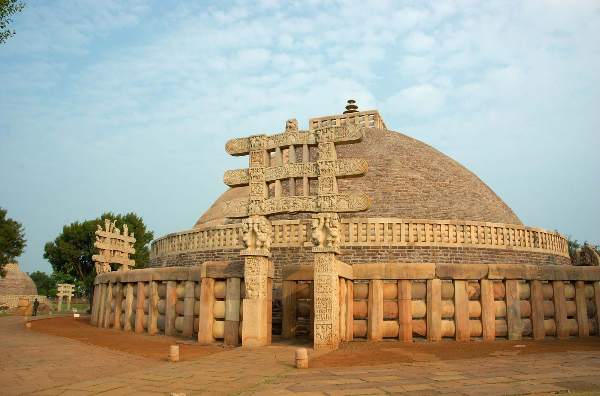
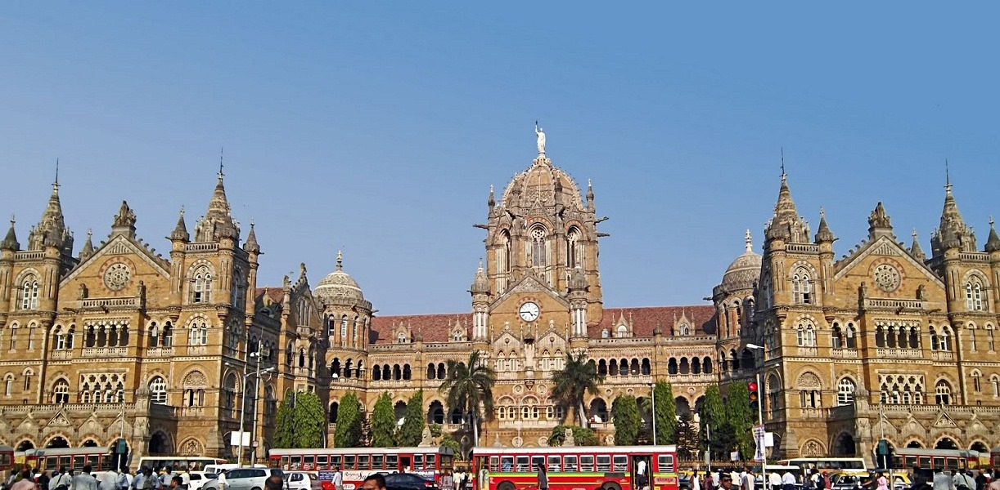

Andhra Pradesh
 Andhra Pradesh is a state in the south-eastern coastal region of India. It is the
seventh-largest state by area covering an area of 162,975 sq. km (62,925 sq. mi) and
tenth-most populous state with 49,386,799 inhabitants. It is bordered by Odisha to the north,
Chhattisgarh to the north-east, Tamil Nadu to the south, Karnataka to the west, Telangana to the
north-west and the Bay of Bengal to the east. It has the second longest coastline in India after
Gujarat of about 974 km. Andhra Pradesh is the first state to be formed on a linguistic basis in
India on 1 October 1953. Andhra Pradesh was once a major Buddhist pilgrimage site in India and a
Buddhist learning center which can be seen in many sites in the state in the form of ruins,
chaityas and stupas Andhra Pradesh is also known as the land of the world famous diamond-
Koh-i-noor and many other global known diamonds due to their presence in its Kollur Mine once.
It is also known as the "Rice Bowl of India" for being a major producer of rice in India.
Its official language is Telugu; one of the classical languages of India, the fourth most spoken
language in India and the 11th-most spoken language in the world.
Andhra Pradesh is a state in the south-eastern coastal region of India. It is the
seventh-largest state by area covering an area of 162,975 sq. km (62,925 sq. mi) and
tenth-most populous state with 49,386,799 inhabitants. It is bordered by Odisha to the north,
Chhattisgarh to the north-east, Tamil Nadu to the south, Karnataka to the west, Telangana to the
north-west and the Bay of Bengal to the east. It has the second longest coastline in India after
Gujarat of about 974 km. Andhra Pradesh is the first state to be formed on a linguistic basis in
India on 1 October 1953. Andhra Pradesh was once a major Buddhist pilgrimage site in India and a
Buddhist learning center which can be seen in many sites in the state in the form of ruins,
chaityas and stupas Andhra Pradesh is also known as the land of the world famous diamond-
Koh-i-noor and many other global known diamonds due to their presence in its Kollur Mine once.
It is also known as the "Rice Bowl of India" for being a major producer of rice in India.
Its official language is Telugu; one of the classical languages of India, the fourth most spoken
language in India and the 11th-most spoken language in the world.
Andhra Pradesh comprises two major regions, namely Rayalaseema in the south-west and Coastal
Andhra bordering the Bay of Bengal in the east and north-east. The state has a total of
thirteen districts, nine located in Coastal Andhra and four in Rayalaseema. The state also has a
union territory, Yanam - a district of Puducherry which lies to the south of Kakinada in the
Godavari delta on the eastern side of the state. It is the only state with three capitals. The
largest city and commercial hub of the state, Visakhapatnam being the executive capital while
Amaravati and Kurnool serve as legislative and judicial capitals respectively. The Economy of
Andhra Pradesh is the seventh-largest state economy in India with 9.33 lakh crore Rupees
(130 billion US Dollars) in gross domestic product and a per capita GDP of 164,000 Rupees
(2,300 US Dollars).Andhra Pradesh ranks 27th among Indian states in Human Development Index
(HDI). Andhra Pradesh has a jurisdiction over almost 15,000 sq.km of territorial waters.
Early inhabitants were known as the Andhras, tracing their history to vedic ages when they
were mentioned in the 14th century Sanskrit epics such as Aitareya Brahmana. According to
Aitareya Brahmana of the Rigveda, the Andhras left North India from the banks of river Yamuna
and migrated to South India. The Assaka Mahajanapada (700 300 BCE) was an ancient kingdom
located between the Godavari and Krishna Rivers in southeastern India accounts that people in
the region are descended from the Viswamitra are found in the Ramayana, the Mahabharata and the
Puranas. The region also derives its name from Satavahanas who are also known as Andhras, the
earliest kings of Andhra Pradesh and India. Early peoples supported local art culture by
building temples and sculptures of the Buddhist monuments in the state. It was ruled by
Satavahanas, Eastern Chalukyas, Andhra Ikshvakus, Vijayanagara Empire, Mauryan Empire, Cholas,
Pallavas, Salankayanas, Vishnukundinas, Kakatiyas and Rashtrakutas. In the 3rd century B.C.,
Andhra was a vassal kingdom of Ashoka but after his death Andhra became powerful and extended
it's empire to the whole of Maratha country and beyond.
Andhra Pradesh hosted 121.8 million visitors in 2015, a 30% growth in tourist arrivals over
the previous year, making it the third most-visited state in India. The Tirumala Venkateswara
Temple in Tirupati is one of the world's most visited religious sites, with 18.25 million
visitors per year. The region is also home to a variety of other pilgrimage centres, such as
the Pancharama Kshetras, Mallikarjuna Jyotirlinga and Kodanda Rama Temple. The state's natural
attractions include the beaches of Visakhapatnam, hill stations such as the Araku Valley and
Horsley Hills, and the island of Konaseema in the Godavari River delta.
Arunachal Pradesh

Arunachal Pradesh, literally "land of dawn-lit mountains") is the northeasternmost state
of India. It borders the states of Assam and Nagaland to the south. It shares international
borders with Bhutan in the west, Myanmar in the east, and a disputed border with China in the
north at the McMahon Line. Itanagar is the state capital of Arunachal Pradesh. Arunachal Pradesh
is the largest of the Seven Sister States of Northeast India by area.The climate of Arunachal
Pradesh varies with elevation. The low altitude (100 1500 m) areas have a Humid subtropical
climate. High altitude and very high altitude areas (3500 5500 m) have a subtropical highland
climate and alpine climate. Arunachal Pradesh receives 2,000 to 5,000 millimetres (79 to 197 in)
of rainfall annually, 70 - 80% obtained between May and October.
As of the 2011 Census of India, Arunachal Pradesh has a population of 1,382,611 and an area
of 83,743 sq.uare kilometres (32,333 sq. mi). It is an ethnically diverse state, with
predominantly Monpa people in the west, Tani people in the center, Tai people in the east,
and Naga people in the south of the state.

A major part of the state is claimed by both the People's Republic of China and Republic
of China (Taiwan) as part of the region of South Tibet. During the 1962 Sino-Indian War, most of
Arunachal Pradesh was temporarily captured by the Chinese People's Liberation Army.
The highest peak in the state is Kangto, at 7,060 metres (23,160 ft). Nyegi Kangsang, the main
Gorichen peak, and the Eastern Gorichen peak are other tall Himalaya peaks. The state's mountain
ranges, in the extreme East of India, are described as "the place where the sun rises" in
historical Indian texts and named the Aruna Mountains, which inspired the name of the state.
The villages of Dong (more accessible by car, and with a lookout favoured by tourists) and
Vijaynagar (on the edge of Myanmar) receive the first sunlight in all of India..
Assam

Assam, is a state in northeastern India, situated south of the eastern Himalayas along the
Brahmaputra and Barak River valleys. Assam covers an area of 78,438 sq. km (30,285 sq. mi).
The state is bordered by Bhutan and Arunachal Pradesh to the north; Nagaland and Manipur to
the east; Meghalaya, Tripura, Mizoram and Bangladesh to the south; and West Bengal to the west
via the Siliguri Corridor, a 22 kilometres (14 mi) strip of land that connects the state to the
rest of India. It is also one of the world's most populous subdivisions. Assamese is the
official and most common language, followed by Bengali, the second most common. Assamese is the
official language of the state. Additional official languages include Bengali and Bodo
languages. Bodo in Bodoland Territorial Council and Bengali in the three districts of Barak
Valley where Sylheti is most commonly spoken.
The administrative districts are further subdivided into 54 "Subdivisions" or Mahakuma.
Every district is administered from a district headquarters with the office of the Deputy
Commissioner, District Magistrate, Office of the District Panchayat and usually with a district
court.

Assam is known for Assam tea and Assam silk. The state was the first site for oil drilling
in Asia. Assam is home to the one-horned Indian rhinoceros, along with the wild water buffalo,
pygmy hog, tiger and various species of Asiatic birds, and provides one of the last wild
habitats for the Asian elephant. The Assamese economy is aided by wildlife tourism to Kaziranga
National Park and Manas National Park, which are World Heritage Sites. Dibru-Saikhowa National
Park is famed for its feral horses. Sal tree forests are found in the state which, as a
result of abundant rainfall, look green all year round. Assam receives more rainfall than most
parts of India; this rain feeds the Brahmaputra River, whose tributaries and oxbow lakes
provide the region with a hydro-geomorphic environment.
In the classical period and up to the 12th century the region east of the Karatoya river,
largely congruent to present-day Assam, was called Kamarupa, and alternatively, Pragjyotisha.
Though the western portion of Assam as a region continued to be called Kamrup, the Ahom kingdom
that emerged in the east, and which came to dominate the entire Brahmaputra valley, was called
Assam (e.g. Mughals used Asham); and the British province too was called Assam. Though the
precise etymology of Assam is not clear, the name Assam is associated with the Ahom people,
originally called Shyam (Shan).
Bihar

Bihar is a state in eastern India. It is the third-largest state by population and
twelfth-largest by territory, with an area of 94,163 km2 (36,357 sq. mi). It is contiguous with
Uttar Pradesh to its west, Nepal to the north, the northern part of West Bengal to the east,
and with Jharkhand to the south. The Bihar plain is split by the river Ganges, which flows
from west to east. Three main cultural regions converge in the state: Magadh, Mithila,
and Bhojpur. Bihar is also the world's third-most populous subnational entity.The tenth and the
last guru of Sikhism, Guru Gobind Singh, was born in Patna in 1666. With political instability
in the Mughal Empire following Aurangzeb's death in 1707, Murshid Quli Khan declared Bengal's
independence and named himself Nawab of Bengal.
On 15 November 2000, southern Bihar was ceded to form the new state of Jharkhand. Only 11.3% of
the population of Bihar lives in urban areas, which is the lowest in India after Himachal
Pradesh. Additionally, almost 58% of Biharis are below the age of 25, giving Bihar the
highest proportion of young people of any Indian state. The official language is Hindi,
although other languages are common, including Maithili, Magahi, Bhojpuri and other Bihari
languages.
In ancient and classical India, the area that is now Bihar was considered a centre of power,
learning, and culture. From Magadha arose India's first empire, the Maurya empire, as well
as one of the world's most widely adhered-to religions: Buddhism. Magadha empires, notably
under the Maurya and Gupta dynasties, unified large parts of South Asia under a central rule.
Another region of Bihar is Mithila which was an early centre of learning and the centre of the
Videha kingdom.
Since the late 1970s, Bihar has lagged far behind other Indian states in terms of social and
economic development. Many economists and social scientists claim that this is a direct
result of the policies of the central government, such as the freight equalization policy,
its apathy towards Bihar, lack of Bihari sub-nationalism, and the Permanent Settlement of 1793
by the British East India Company. The state government has, however, made significant strides
in developing the state. Improved governance has led to an economic revival in the state through
increased investment in infrastructure, better health care facilities, greater emphasis on
education, and a reduction in crime and corruption.

Chattisgarh

Chhattisgarh is one of the 28 state of India, located in east-central India. Chhattisgarh was
formed on 1 November 2000. Earlier it was under Madhya Pradesh. According to the opinion of
r. Hiralal, It is said that at one time there were 36 strongholds in this area, that is why its
name was Chhattisgarh. But even after the increase in the number of strongholds, there was no
change in the name, Chhattisgarh is the State of India which has been given the status of
'Mahtari' (Mother). There are two regions in India which are named for special reasons.
Changed - one was 'Magadha' which became "Bihar" due to the abundance of Buddhism viharas and
the other was 'Dakshina Kosala' which became "Chhattisgarh" due to the inclusion of thirty-six
strongholds. But both these areas have been making India proud since very ancient times.
"Chhattisgarh" has been the center of development of various cultures since Vedic and
mythological times. The ancient temples here and their ruins indicate that Vaishnava,
Shaivite, Shakta, Buddhist cultures have had influence in various periods. A resource-rich
state, it is a source of electricity and steel for the country, producing 15% of the total
steel. It is the ninth-largest state in India, with an area of 135,192 km2 (52,198 sq. mi), with
a population of 32.2 million as of 2020. Chhattisgarh is the 17th-most populated state in the
country..
The state was formed on 1 November 2000 by partitioning ten Chhattisgarhi and six Gondi-speaking
southeastern districts of Madhya Pradesh. The capital city is Raipur. Chhattisgarh borders the
states of Madhya Pradesh in the northwest, Uttar Pradesh in the north, Jharkhand in northeast,
Maharashtra in the southwest, Telangana and Andhra Pradesh in the south, and Odisha in the
southeast. Currently the state comprises 28 districts.
Chhattisgarh is one of the fastest-developing states in India. The Gross State Domestic Product
(GSDP) of Chhattisgarh is 3.63 lakh crore Rupees (51 billion US Dollars) and the per capita
GSDP 102,762 Rupees (1,400 US Dollars) A resource-rich state, Chhattisgarh is a source of
electricity andsteel for the country, accounting for 15% of the total steel produced as well
as a largecontributor of coal.
Goa

Goa is a state on the southwestern coast of India within the region known as the Konkan, and
geographically separated from the Deccan highlands by the Western Ghats. It is surrounded by
the Indian states of Maharashtra to the north and Karnataka to the east and south, with the
Arabian Sea forming its western coast. It is India's smallest state by area and the
fourth-smallest by population. Goa has the highest GDP per capita among all Indian states,
two and a half times that of the country. It was ranked the best-placed state by the Eleventh
Finance Commission for its infrastructure and ranked on top for the best quality of life in
India by the National Commission on Population based on the 12 Indicators.
Panaji is the state's capital, while Vasco da Gama is its largest city. The historic city of
Margao still exhibits the cultural influence of the Portuguese, who first landed in the early
16th century as merchants and conquered it soon thereafter. Goa was a former state of the
Portuguese Empire. The Portuguese overseas territory of Portuguese India existed for about
450 years until it was annexed by India in 1961. Its majority and official language is Konkani.

Goa is visited by large numbers of international and domestic tourists each year for its
white sand beaches, nightlife, places of worship and World Heritage-listed architecture.
It has rich flora and fauna, owing to its location on the Western Ghats range, a biodiversity
hotspot.
In ancient literature, Goa was known by many names, such as Gomanchala, Gopakapattana,
Gopakapattam, Gopakapuri, Govapuri, Govem, and Gomantak. Other historical names for Goa are
Sindapur, Sandabur, and Mahassapatam.

Gujarat

Gujarat is a state on the western coast of India with a coastline of 1,600 km (990 mi) most
of which lies on the Kathiawar peninsula and a population of 60.4 million. It is the fifth
largest Indian state by area and the ninth largest state by population. Gujarat is bordered by
Rajasthan to the northeast, Dadra and Nagar Haveli and Daman and Diu to the south, Maharashtra
to the southeast, Madhya Pradesh to the east, and the Arabian Sea and the Pakistani province of
Sindh to the west. Its capital city is Gandhinagar, while its largest city is Ahmedabad.
The Gujarati-speaking people of India are indigenous to the state. The economy of Gujarat is
the third-largest in India, with a gross state domestic product (GSDP) of 15.02 lakh crore
Rupees (210 billion US Dollars) and has the country's 11th-highest GSDP per capita of 197,000
Rupees (2,800 US Dollars). Gujarat ranks 21st among Indian states in human development index.
The state traditionally has low unemployment and widely considered one of the most industrially
developed state of India and a manufacturing hub.
The state encompasses some sites of the ancient Indus Valley Civilisation, such as Lothal,
Dholavira and Gola Dhoro. Lothal is believed to be one of the world's first seaports.
Gujarat's coastal cities, chiefly Bharuch and Khambhat, served as ports and trading centres
in the Maurya and Gupta empires, and during the succession of royal Saka dynasties from the
Western Satraps era. Along with Bihar and Nagaland, Gujarat is one of the three Indian states
prohibit the sale of alcohol. Gir Forest National Park in Gujarat is home of the only wild
population of the Asiatic lion in the world.

The population of Gujarat was 60,439,692 (31,491,260 males and 28,948,432 females) according
to the 2011 census data. The population density is 308 s. km (797.6 per sq. mi), lower than other
Indian states. As per the census of 2011, the state has a sex ratio of 918 females for every
1000 males, one of the lowest (ranked 24) amongst the 29 states in India.
While Gujarati speakers constitute a majority of Gujarat's population, the metropolitan areas
of Ahmedabad, Vadodara and Surat are cosmopolitan, with numerous other ethnic and language
groups. Marwaris compose large minorities of economic migrants; smaller communities of people
from the other states of India has also migrated to Gujarat for employment. Luso-Indians,
Anglo-Indians, Jews and Parsis also live in the areas. Sindhi presence is traditionally
important here following the Partition of India in 1947.
Haryana

Haryana is one of the 28 states in India, located in the northern part of the country. It was
carved out of the former state of East Punjab on 1 November 1966 on a linguistic basis. It is
ranked 22nd in terms of area, with less than 1.4% (44,212 sq. km or 17,070 sq. mi) of India's
land area. Chandigarh is the state capital, Faridabad in National Capital Region is the most
populous city of the state, and Gurugram is a leading financial hub of the NCR, with major
Fortune 500 companies located in it. Haryana has 6 administrative divisions, 22 districts,
72 sub-divisions, 93 revenue tehsils, 50 sub-tehsils, 140 community development blocks,
154 cities and towns, 6,848 villages, and 6222 villages panchayats.
As the largest recipient of investment per capita since 2000 in India, Haryana has the fifth
highest per capita income among Indian states and territories, more than double the national
average for year 2018 19. Haryana's state GSDP is 12th largest in India and grew at
12.96% between 2012 and 2017. There are by 30 special economic zones (SEZs), mainly located
within the industrial corridor projects connecting the National Capital Region (NCR).
Faridabad has been described as eighth fastest growing city in the world and third most in
India. In services, Gurugram ranks number 1 in India in IT growth rate and existing
technology infrastructure, and number 2 in startup ecosystem, innovation and livability.
Haryana is the 7th highest among Indian states by human development index ranking.
Among the world's oldest and largest ancient civilisations, the Indus Valley Civilization
sites at Rakhigarhi village in Hisar district and Bhirrana in Fatehabad district are 9,000
years old. Rich in history, monuments, heritage, flora and fauna, human resources and
tourism with well developed economy, national highways and state roads, it is bordered by
Himachal Pradesh to the north-east, by river Yamuna along its eastern border with Uttar
Pradesh, by Rajasthan to the west and south, and Ghaggar-Hakra River flows along its northern
border with Punjab. Since Haryana surrounds the country's capital Delhi on three sides
(north, west and south), consequently a large area of Haryana is included in the
economically-important National Capital Region for the purposes of planning and development.
The name Haryana is found in the works of the 12th-century AD Apabhramsha writer Vibudh
Shridhar (VS 1189 1230). The name Haryana has been derived from the Sanskrit words Hari
(the Hindu god Vishnu) and ayana (home), meaning "the Abode of God". However, scholars such
as Muni Lal, Murli Chand Sharma, HA Phadke and Sukhdev Singh Chib believe that the name comes
from a compound of the words Hari (Sanskrit Harit, "green") and Aranya (forest).
Himachal Pradesh

Himachal Pradesh; literaly meaning "snow-laden province" is a state in the northern part of
India. Situated in the Western Himalayas, it is one of the eleven mountain states and is
characterized by an extreme landscape featuring several peaks and extensive river systems.
Himachal Pradesh shares borders with the Union territories of Jammu and Kashmir and Ladakh to
the north, and the states of Punjab to the west, Haryana to the southwest, and Uttarakhand and
Uttar Pradesh to the south. The state also has a border with the occupied region of Tibet to
the east.
The predominantly mountainous region comprising the present-day Himachal Pradesh has been
inhabited since pre-historic times having witnessed multiple waves of human migration from
other areas. Through its history, the region was mostly ruled by local kingdoms some of
which accepted the suzerainty of larger empires. Prior to India's independence from the British,
Himachal comprised the hilly regions of Punjab Province of British India. After independence,
many of the hilly territories were organized as the Chief Commissioner's province of Himachal
Pradesh which later became a union territory. In 1966, hilly areas of neighboring Punjab state
were merged into Himachal and it was ultimately granted full statehood in 1971.

Himachal Pradesh is spread across valleys with many perennial rivers flowing through them.
Almost 90% of the state's population lives in rural areas. Agriculture, horticulture,
hydropower and tourism are important constituents of the state's economy. The hilly state
is almost universally electrified with 99.5% of the households having electricity as of 2016.
The state was declared India's second open-defecation-free state in 2016. According to a
survey of CMS India Corruption Study 2017, Himachal Pradesh is India's least corrupt state.
Hydropower is one of the major sources of income generation for the state. The state has an
abundance of hydropower resources because of the presence of various perennial rivers.
Many high-capacity hydropower plants have been constructed which produce surplus electricity
that is sold to other states, such as Delhi, Punjab and West Bengal. The income generated
from exporting the electricity to other states is being provided as subsidy to the consumers
in the state. The rich hydropower resources of Himachal have resulted in the state becoming
almost universally electrified with around 94.8% houses receiving electricity as of 2001, as
compared to the national average of 55.9%. Himachal's hydro-electric power production is
however yet to be fully utilised: The identified hydroelectric potential for the state is
27,436 MW in five river basins while the hydroelectric capacity in 2016 was 10,351 MW.

Jharkhand

Jharkhand; meaning "The land of forests" is a state in eastern India. The state shares its
border with the states of Bihar to the north, Uttar Pradesh to the northwest, Chhattisgarh
to the west, Odisha to the south and West Bengal to the east. It has an area of 79,710 sq. km
(30,778 sq. mi). It is the 15th largest state by area, and the 14th largest by population.
Hindi is the official language of the state. The city of Ranchi is its capital and Dumka
its sub capital. The state is known for its waterfalls, hills and holy places; Baidyanath Dham,
Parasnath and Rajrappa are major religious sites. The state was formed in 2000, from the
territory that had previously been part of Bihar.
Jharkhand suffers from what is sometimes termed a resource curse: it accounts for more than
40% of the mineral resources of India, but 39.1% of its population is below the poverty
line and 19.6% of children under five years of age are malnourished. The state is primarily
rural, with only 24% of the population living in cities. Jharkhand is among the leading states
in economic growth. In 2017 18, the GSDP growth rate of state was at 10.22%.
The dynamics of resources and the politics of development still influence the socio-economic
structures in Jharkhand, which was carved out of the relatively underdeveloped southern part
of Bihar. According to the 1991 census, the state has a population of over 20 million out
of which 28% is tribal while 12% of the people belong to scheduled castes. Jharkhand has 24
districts, 260 blocks, and 32,620 villages out of which only 45% have access to electricity
while only 8,484 are connected by roads. Jharkhand is the leading producer of mineral wealth
in the country after Chhattisgarh state, endowed as it is with a vast variety of minerals like
iron ore, coal, copper ore, mica, bauxite, graphite, limestone, and uranium. Jharkhand is also
known for its vast forest resources.
Jharkhand is located in the eastern part of India and is enclosed by Bihar to the northern
side, Chhattisgarh and Uttar Pradesh to the western side, Odisha to the southern part and West
Bengal to the eastern part.Jharkhand envelops a geographical area of 79.70 lakh hectare.
Much of Jharkhand lies on the Chota Nagpur Plateau. Many rivers pass through the Chota Nagpur
plateau. They are: Damodar, North Koel, Barakar, South Koel, Sankh, Brahmani and Subarnarekha
rivers. The higher watersheds of these rivers stretch out within the Jharkhand state. Much of
the Jharkhand state is still enclosed by forest. Forests sustain the population of Elephants
and tigers.

Karnataka

Karnataka is a state in the south western region of India. It is the largest state in South
India and seventh largest in India. It was formed on 1 November 1956, with the passage of the
States Reorganisation Act. Originally known as the State of Mysore, it was renamed Karnataka in
1973. The state corresponds to the Carnatic region. The capital and largest city is Bangalore.
Karnataka is bordered by the Arabian Sea to the west, Goa to the northwest, Maharashtra to
the north, Telangana to the northeast, Andhra Pradesh to the east, Tamil Nadu to the southeast,
and Kerala to the south. It is the only southern state to have land borders with all of the
other 4 southern Indian sister states. The state covers an area of 191,976 sq.uare kilometres
(74,122 sq. mi), or 5.83 percent of the total geographical area of India. It is the sixth
largest Indian state by area. With 61,130,704 inhabitants at the 2011 census, Karnataka is
the eighth largest state by population, comprising 30 districts. Kannada, one of the classical
anguages of India, is the most widely spoken and official language of the state. Other minority
languages spoken include Urdu, Konkani, Marathi, Tulu, Tamil, Telugu, Malayalam, Kodava and
Beary. Karnataka also contains some of the only villages in India where Sanskrit is primarily
spoken.

Though several etymologies have been suggested for the name Karnataka, the generally accepted
one is that Karnataka is derived from the Kannada words karu and nadu, meaning "elevated land".
Karu Nadu may also be read as karu, meaning "black" and nadu, meaning "region", as a reference
to the black cotton soil found in the Bayalu Seeme region of the state. The British used the
word Carnatic, sometimes Karnatak, to describe both sides of peninsular India, south of the
Krishna.
With an antiquity that dates to the paleolithic, Karnataka has been home to some of the most
powerful empires of ancient and medieval India. The philosophers and musical bards patronised
by these empires launched socio-religious and literary movements which have endured to the
present day. Karnataka has contributed significantly to both forms of Indian classical music,
the Carnatic and Hindustani traditions.The economy of Karnataka is the fourth-largest of any
Indian state with 15.35 trillion Rupees (220 billion US Dollars) in gross domestic product
and a per capita GDP of 210,000 Rupees (2,900 US Dollars). Karnataka has the nineteenth
highest ranking among Indian states in Human Development Index.
Kerala

Kerala is a state on the southwestern Malabar Coast of India. It was formed on 1 November 1956,
following the passage of the States Reorganisation Act, by combining Malayalam-speaking regions
of the erstwhile states of Travancore-Cochin and Madras. Spread over 38,863 sq. km
(15,005 sq. mi), Kerala is the twenty-first largest Indian state by area. It is bordered by
Karnataka to the north and northeast, Tamil Nadu to the east and south, and the Lakshadweep
Sea to the west. With 33,387,677 inhabitants as per the 2011 Census, Kerala is the
thirteenth-largest Indian state by population. It is divided into 14 districts with the
capital being Thiruvananthapuram. Malayalam is the most widely spoken language and is also
the official language of the state.
The Chera Dynasty was the first prominent kingdom based in Kerala. The Ay kingdom in the deep
south and the Ezhimala kingdom in the north formed the other kingdoms in the early years of the
Common Era (CE or AD). The region had been a prominent spice exporter since 3000 BCE. The
region's prominence in trade was noted in the works of Pliny as well as the Periplus around
100 CE. In the 15th century, the spice trade attracted Portuguese traders to Kerala, and paved
the way for European colonisation of India. At the time of Indian independence movement in the
early 20th century, there were two major princely states in Kerala-Travancore State and the
Kingdom of Cochin. They united to form the state of Thiru-Kochi in 1949. The Malabar region,
in the northern part of Kerala, had been a part of the Madras province of British India, which
later became a part of the Madras State post-independence. After the States Reorganisation Act,
1956, the modern-day state of Kerala was formed by merging the Malabar district of Madras State
(excluding Gudalur taluk of Nilgiris district, Topslip, the Attappadi Forest east of Anakatti),
the state of Thiru-Kochi (excluding four southern taluks of Kanyakumari district, Shenkottai
and Tenkasi taluks), and the taluk of Kasaragod (now Kasaragod District) in South Canara
(Tulunad) which was a part of Madras State.


The economy of Kerala is the 10th-largest in India with 7.82 trillion Rupees (110 billion US
Dollars) in gross state domestic product (GSDP) and a per capita GSDP of 204,000 Rupees
(2,900 US Dollars). Kerala has the lowest positive population growth rate in India, 3.44%;
the highest Human Development Index (HDI), 0.784 in 2018 (0.712 in 2015); the highest literacy
rate, 93.91% in the 2011 census; the highest life expectancy, 77 years; and the highest sex
ratio, 1,084 women per 1,000 men. The state has witnessed significant emigration, especially
to the Arab states of the Persian Gulf during the Gulf Boom of the 1970s and early 1980s, and
its economy depends significantly on remittances from a large Malayali expatriate community.
Hinduism is practised by more than half of the population, followed by Islam and Christianity.
The culture is a synthesis of Aryan, Dravidian, Arab, and European cultures, developed over
millennia, under influences from other parts of India and abroad.
The production of pepper and natural rubber contributes significantly to the total national
output. In the agricultural sector, coconut, tea, coffee, cashew and spices are important.
The state's coastline extends for 595 kilometres (370 mi), and around 1.1 million people in
the state are dependent on the fishery industry which contributes 3% to the state's income.
The state has the highest media exposure in India with newspapers publishing in nine languages,
mainly English and Malayalam. Kerala is one of the prominent tourist destinations of India,
with backwaters, hill stations, beaches, Ayurvedic tourism and tropical greenery as its major
attractions.

Madhya Pradesh

Madhya Pradesh; meaning Central Province is a state in central India. Its capital is Bhopal,
and the largest city is Indore, with Jabalpur, Gwalior, Rewa, Ujjain being the other major
cities. Madhya Pradesh is the second largest Indian state by area and the fifth largest state
by population with over 75 million residents. It borders the states of Uttar Pradesh to the
northeast, Chhattisgarh to the southeast, Maharashtra to the south, Gujarat to the west, and
Rajasthan to the northwest. Before 2000, when Chhattisgarh was a part of Madhya Pradesh,
Madhya Pradesh was the largest state in India and the distance between the two furthest points
inside the state, Singoli and Konta, was 1500 km.
The area covered by the present-day Madhya Pradesh includes the area of the ancient Avanti
Mahajanapada, whose capital Ujjain (also known as Avantika) arose as a major city during the
second wave of Indian urbanisation in the sixth century BCE. Subsequently, the region was ruled
by the major dynasties of India. Maratha empire dominated the majority of the 18th century.
After the Anglo Maratha Wars 19th century, the region was divided into several princely states
under the British and incorporated into Central Provinces and Berar and the Central India
Agency. After India's independence, Madhya Pradesh state was created with Nagpur as its
capital: this state included the southern parts of the present-day Madhya Pradesh and
northeastern portion of today's Maharashtra. In 1956, this state was reorganised and its
parts were combined with the states of Madhya Bharat, Vindhya Pradesh and Bhopal to form the
new Madhya Pradesh state, the Marathi-speaking Vidarbha region was removed and merged with the
then Bombay State. This state was the largest in India by area until 2000, when its
southeastern Chhattisgarh region was made as a separate state.
The economy of Madhya Pradesh is the tenth-largest state economy in India with 8.09 lakh crore
Rupees (110 billion US Dollars) in gross domestic product and a per capita GDP of 90,000
Rupees (1,300 US Dollars). Madhya Pradesh ranks 32nd among Indian states in human development
index. Rich in mineral resources, MP has the largest reserves of diamond and copper in India.
More than 30% of its area is under forest cover. Its tourism industry has seen considerable
growth, with the state topping the National Tourism Awards in 2010 11. In recent years, the
state's GDP growth has been above the national average.
Madhya Pradesh has a subtropical climate with a hot dry summer (April June), followed by
monsoon rains (July September) and a cool and relatively dry winter. The average rainfall is
about 1,194 mm (47.0 in). The southeastern districts have the heaviest rainfall, some places
receiving as much as 2,150 mm (84.6 in), while the western and northwestern districts receive
1,000 mm (39.4 in) or less.

Maharashtra

Maharashtra is a state in the western peninsular region of India occupying a substantial portion
of the Deccan Plateau. As the home of the Marathi people, Maharashtra is the second-most
populous state and third-largest state by area in India. Spread over 307,713 sq. km
(118,809 sq. mi), it is also the world's second-most populous country subdivision. Maharashtra
is bordered by the Arabian Sea to the west, the Indian states of Karnataka and Goa to the
south, Telangana to the southeast and Chhattisgarh to the east, Gujarat and Madhya Pradesh
to the north, and the Indian union territory of Dadra and Nagar Haveli and Daman and Diu to
the northwest.
Maharashtra was formed on 1 May 1960 by splitting the bilingual Bombay State, which had
existed since 1956, into majority Marathi-speaking Maharashtra and Gujarati-speaking Gujarat,
respectively. It has over 112 million inhabitants and its capital, Mumbai, has a population
around 18.4 million making it the most populous urban area in India. Nagpur hosts the winter
session of the state legislature. Pune is known as the 'Oxford of the East' due to the
presence of several well-known educational institutions. Nashik is known as the 'Wine
Capital of India' as it has the largest number of wineries and vineyards in the country.

The Godavari and the Krishna are the two major rivers in the state. The Narmada and Tapi Rivers
flow near the border between Maharashtra and Madhya Pradesh and Gujarat. Maharashtra is the
third-most urbanised state of India. Prior to Indian independence, Maharashtra was
chronologically ruled by the Satavahana dynasty, Rashtrakuta dynasty, Western Chalukyas,
Deccan sultanates, Mughals and Marathas, and the British. Ruins, monuments, tombs, forts,
and places of worship left by these rulers are dotted around the state. They include the
UNESCO World Heritage Sites of the Ajanta and Ellora caves.
Maharashtra is the most industrialised state in India while state capital Mumbai is India's
biggest financial and commercial capital. The state has played a significant role in the
country's social and political life and widely considered a leader in terms of agricultural
and industrial production, trade and transport, and education. Maharashtra is one of the
most developed and prosperous Indian states and continues to be the single largest contributor
to the national economy with a share of 15% in the country's GDP. The economy of Maharashtra
is the largest in India, with a gross state domestic product (GSDP) of 28.78 lakh crore Rupees
(400 billion US Dollars) and has the country's 13th-highest GSDP per capita of 207,727 Rupees
(2,900 US Dollars). Maharashtra is the fifteenth-highest ranking among Indian states in
human development index.

Manipur

Manipur is a state in northeastern India, with the city of Imphal as its capital. It is
bounded by the Indian states of Nagaland to the north; Mizoram and Myanmar (Chin State) to
the south; Assam to the west; Myanmar (Sagaing Region) lies to its east. The state covers an
area of 22,327 sq.uare kilometres (8,621 sq. mi) and has a population of almost 3 million,
including the Meitei, who are the majority group in the state, the Pangals or the Pangans
(Manipuri Muslims), Naga tribes, Kuki/Zo tribes and other communities, who speak a variety
of Sino-Tibetan languages. Manipur has been at the crossroads of Asian economic and cultural
exchange for more than 2,500 years. It has long connected the Indian subcontinent and Central
Asia to Southeast Asia, China (or East Asia), Siberia (Russia), Micronesia and Polynesia,
enabling migration of people, cultures, and religions.
During the days of the British Indian Empire, the Kingdom of Manipur was one of the princely
states. Between 1917 and 1939, some people of Manipur pressed the princely rulers for democracy.
By the late 1930s, the princely state of Manipur negotiated with the British administration
its preference to continue to be part of the Indian Empire, rather than part of Burma, which
was being separated from India. These negotiations were cut short with the outbreak of World
War II in 1939. On 11 August 1947, Maharaja Budhachandra signed an Instrument of Accession,
joining India. Later, on 21 September 1949, he signed a Merger Agreement, merging the kingdom
into India, which led to its becoming a Part C State. This merger was later disputed by groups
in Manipur, as having been completed without consensus and under duress. The dispute and
differing visions for the future has resulted in a 50-year insurgency in the state for
independence from India, as well as in repeated episodes of violence among ethnic groups in
the state. From 2009 through 2018, the conflict was responsible for the violent deaths of over
1000 people.
The Meitei ethnic group represents around 53% of the population of Manipur state, followed by
various Naga tribes at 24% and various Kuki-Zo tribes at 16%. The main language of the state
is Meiteilon (also known as Manipuri). Tribals constitutes about 41% of the state
population(according to 2011 census) and are distinguished by dialects and cultures
that are often village-based. Manipur's ethnic groups practice a variety of religions.
According to 2011 census, Hinduism is the major religion in the state, closely followed by
Christianity. Other religions include Islam, Sanamahism, Buddhism, Judaism etc.
Manipur has primarily an agrarian economy, with significant hydroelectric power generation
potential. It is connected to other areas by daily flights through Imphal airport, the second
largest in northeastern India. Manipur is home to many sports and the origin of Manipuri dance,
and is credited with introducing polo to Europeans.
Meghalaya

Meghalaya is a hilly state in northeastern India. The name means "the abode of clouds" in
Sanskrit. The population of Meghalaya as of 2016 is estimated to be 3,211,474. Meghalaya covers
an area of approximately 22,430 sq.uare kilometres, with a length to breadth ratio of about 3:1.
The state is bounded to the south by the Bangladeshi divisions of Mymensingh and Sylhet, to
the west by the Bangladeshi division of Rangpur, and to the north and east by India's State of
Assam. The capital of Meghalaya is Shillong. During the British rule of India, the British
imperial authorities nicknamed it the "Scotland of the East". Meghalaya was previously part
of Assam, but on 21 January 1972, the districts of Khasi, Garo and Jaintia hills became the
new state of Meghalaya. English is the official language of Meghalaya. Unlike many Indian
states, Meghalaya has historically followed a matrilineal system where the lineage and
inheritance are traced through women; the youngest daughter inherits all wealth and she also
takes care of her parents.
The state is the wettest region of India, recording an average of 12,000 mm (470 in) of rain a
year. About 70% of the state is forested. The Meghalaya subtropical forests ecoregion
encompasses the state; its mountain forests are distinct from the lowland tropical forests
to the north and south. The forests are notable for their biodiversity of mammals, birds,
and plants.
Meghalaya has predominantly an agrarian economy with a significant commercial forestry industry.
The important crops are potatoes, rice, maize, pineapples, bananas, papayas, spices, etc.
The service sector is made up of real estate and insurance companies. Meghalaya's gross state
domestic product for 2012 was estimated at 16,173 crore Rupees (2.3 billion US Dollars) in
current prices. The state is geologically rich in minerals, but it has no significant
industries. The state has about 1,170 km (730 mi) of national highways. It is also a major
logistical center for trade with Bangladesh.
In July 2018, the International Commission on Stratigraphy divided the Holocene epoch into
three, with the late Holocene being called the Meghalayan stage/age, since a speleothem
in Mawmluh cave indicating a dramatic worldwide climate event around 2250 BC had been chosen
as the boundary stratotype.

Mizoram

Mizoram is a state in northeastern India, with Aizawl as its capital city. The name is derived
from "Mizo", the name of the native inhabitants, and "Ram", which means land, and thus Mizoram
means "land of the Mizos". Within the northeast region, it is the southernmost landlocked
state, sharing borders with three of the Seven Sister States, namely Tripura, Assam and Manipur.
The state also shares a 722-kilometre border with the neighbouring countries of Bangladesh and
Myanmar.
Like several other northeastern states of India, Mizoram was previously part of Assam until
1972, when it was carved out as a Union Territory. It became the 23rd state of India, a step
above Union Territory, on 20 February 1987, with the Fifty-Third Amendment of the Indian
Constitution, 1986.Mizoram's population was 1,091,014, according to a 2011 census. It is the
2nd least populous state in the country. Mizoram covers an area of approximately 21,087
sq.uare kilometres. About 91% of the state is forested.

About 95% of the current population is of diverse tribal origins who settled in the state,
mostly from Southeast Asia, over waves of migration starting about the 16th century but mainly
in the 18th century. This is the highest concentration of tribal people among all states of
India, and they are currently protected under Indian constitution as a Scheduled Tribe. Mizoram
is one of three states of India with a Christian majority (87%). Its people belong to various
denominations, mostly Presbyterian in the north and Baptists in the south.
Mizoram is a highly literate agrarian economy. Slash-and-burn jhum, or shifting cultivation,
is the most common form of farming here, though it gives poor crop yields. In recent years,
the jhum farming practices are steadily being replaced with a significant horticulture and
bamboo products industry. The state's gross state domestic product for 2012 was
estimated at 6,991 crore Rupees (980 million US dolars). About 20% of Mizoram's population lives below
poverty line, with 35% rural poverty as of 2014. The state has about 871 kilometres of
national highways, with NH-54 and NH-150 connecting it to Assam and Manipur respectively. It
is also a growing transit point for trade with Myanmar and Bangladesh.
Nagaland

Nagaland is a landlocked state in north-eastern India. It is bordered by the state of
Arunachal Pradesh to the north, Assam to the west, Manipur to the south and the Sagaing Region
of Myanmar to the east. Nagaland's capital city is Kohima and its largest city is Dimapur.
It has an area of 16,579 sq.uare kilometres (6,401 sq. mi) with a population of 1,980,602 per
the 2011 Census of India, making it one of the smallest states of India.
Nagaland became the 16th state of India on 1 December 1963. The state has experienced
insurgency, as well as an inter-ethnic conflict, since the 1950s. The violence and insecurity
have limited Nagaland's economic development. Agriculture is the most important economic
activity, covering over 70% of the state's economy. Other significant economic activity
includes forestry, tourism, insurance, real estate, and miscellaneous cottage industries.
The state lies between the parallels of 98 and 96 degrees east longitude and 26.6 and 27.4
degrees latitude north. The state is home to a rich variety of flora and fauna.
The population of Nagaland consists of almost 1.9 million people, of which 1.04 million are
males and 0.95 million females. Among its districts, Dimapur has the largest population
(379,769), followed by Kohima (270,063). The least populated district is Longleng (50,593).
75% of the population lives in the rural areas. As of 2013, about 10% of rural population is
below the poverty line; among the people living in urban areas 4.3% of them are below the
poverty line.
The state showed a population drop between 2001 census to 2011 census, the only state to show
a population drop in the census. This has been attributed, by scholars, to incorrect counting
in past censuses; the 2011 census in Nagaland is considered most reliable so far.The largest
urban agglomerations are centred upon Dimapur (122,834) and Kohima (115,283). Other major towns
(and 2011 census populations) are Tuensang (36,774), Mokokchung (35,913), Wokha (35,004), Mon
(26,328), Ch moukedima (25,885), Zunheboto (22,633), Kiphire (16,487), Kuda (16,108), Kohima
Village (15,734), Phek (14,204), Pfutsero (10,371) and Diphupar 'A' (10,246).
Odisha

Odisha, formerly Orissa, is an Indian state located in eastern India. It neighbors the states
of West Bengal and Jharkhand to the north, Chhattisgarh to the west and Andhra Pradesh to the
south. Odisha has a coastline of 485 kilometres (301 mi) along the Bay of Bengal. It is the 8th
largest state by area, and the 11th largest by population. The state has the third largest
population of Scheduled Tribes in India.
The ancient kingdom of Kalinga, which was invaded by the Mauryan emperor Ashoka
(which was again won back from them by king Kharavela) in 261 BCE resulting in the Kalinga War,
coincides with the borders of modern-day Odisha. The modern boundaries of Odisha were
demarcated by the British Indian government and the "Province of Orissa" was established on 1
April 1936, it consisted of Odia (Oriya) speaking districts. 1 April is celebrated as Utkala
Dibasa. The region is also known as Utkala and is mentioned in India's national anthem,
"Jana Gana Mana". Cuttack was made the capital of the region by Anantavarman Chodaganga
in c. 1135, after which the city was used as the capital by many rulers, through the
British era until 1948. Thereafter, Bhubaneswar became the capital of Odisha.
The economy of Odisha is the 16th-largest state economy in India with 4.16 lakh crore Rupees
(58 billion US Dollars) in gross domestic product and a per capita GDP of 93,000 Rupees
(1,300 US Dollars). Odisha ranks 23rd among Indian states in human development index.
The state experiences four meteorological seasons: winter (January to February), pre-monsoon
season (March to May), south-west monsoon season (June to September) and north east monsoon
season (October December). However, locally the year is divided into six traditional seasons
(or rutus): Grishma (summer), Barsha (rainy season), Sharata (autumn), Hemanta (dewy),
Sheeta(winter season) and Basanta (spring).
Punjab

Punjab; also romanised as Panjab or Panj-Ab is a geopolitical, cultural, and historical
region in South Asia, specifically in the northern part of the Indian subcontinent, comprising
areas of eastern Pakistan and northern India. The boundaries of the region are ill-defined and
focus on historical accounts.
The geographical definition of the term "Punjab" has changed over time. In the 16th century
Mughal Empire it referred to a relatively smaller area between the Indus and the Sutlej rivers.
In British India, until the Partition of India in 1947, the Punjab Province encompassed the
present-day Indian states and union territories of Punjab, Haryana, Himachal Pradesh,
Chandigarh and Delhi and the Pakistani regions of Punjab and Islamabad Capital Territory.
It bordered the Balochistan and Khyber-Pakhtunkhwa regions to the west, Kashmir to the north,
the Hindi Belt to the east, and Rajasthan and Sindh to the south.

The people of the Punjab today are called Punjabis, and their principal language is Punjabi.
The main religion of the Pakistani Punjab region is Islam. The two main religions of the Indian
Punjab region are Sikhism and Hinduism. Other religious groups are Christianity, Jainism,
Zoroastrianism, Buddhism, and Ravidassia. The Punjab region was the cradle for the Indus
Valley Civilisation. The region had numerous migration by the Indo-Aryan peoples. The land was
later contested by the Persians, Indo-Greeks, Indo-Scythians, Kushans, Macedonians, Ghaznavids,
Turkic, Mongols, Timurids, Mughals, Marathas, Arabs, Pashtuns, British and other peoples.
Historic foreign invasions mainly targeted the most productive central region of the Punjab
known as the Majha region, which is also the bedrock of Punjabi culture and traditions. The
Punjab region is often referred to as the breadbasket in both India and Pakistan.
The region was originally called Sapta Sindhu, the Vedic land of the seven rivers flowing into
the ocean. The origin of the word Punjab can probably be traced to the Sanskrit panca-nada,
which literally means 'five rivers', and is used as the name of a region in Mahabharata.
The later name for the region, Punjab, was introduced to the region by the Turko-Persian
conquerors of India, and more formally popularised during the Mughal Empire.
Rajasthan

Rajasthan; literally, "Land of Kings" is a state in northern India. The state covers an area of
342,239 sq.uare kilometres (132,139 sq. mi) or 10.4 percent of the total geographical area of
India. It is the largest Indian state by area and the seventh largest by population. Rajasthan
is located on the northwestern side of India, where it comprises most of the wide and
inhospitable Thar Desert (also known as the "Great Indian Desert") and shares a border with
the Pakistani provinces of Punjab to the northwest and Sindh to the west, along the
Sutlej-Indus river valley. It is bordered by five other Indian states: Punjab to the north;
Haryana and Uttar Pradesh to the northeast; Madhya Pradesh to the southeast; and Gujarat to
the southwest. Its geographical location is 23.3 to 30.12 North latitude and 69.30 to 78.17
East longitude, with the Tropic of Cancer passing through southernmost tip of the state.
Major features include the ruins of the Indus Valley Civilisation at Kalibangan and Balathal,
the Dilwara Temples, a Jain pilgrimage site at Rajasthan's only hill station, Mount Abu, in the
ancient Aravalli mountain range and in eastern Rajasthan, the Keoladeo National Park of
Bharatpur, a World Heritage Site known for its bird life. Rajasthan is also home to three
national tiger reserves, the Ranthambore National Park in Sawai Madhopur, Sariska Tiger Reserve
in Alwar and Mukundra Hills Tiger Reserve in Kota.

The state was formed on 30 March 1949 when Rajputana the name adopted by the British Raj for
its dependencies in the region was merged into the Dominion of India. Its capital and
largest city is Jaipur. Other important cities are Jodhpur, Kota, Bikaner, Ajmer, Bharatpur
and Udaipur. The economy of Rajasthan is the seventh-largest state economy in India with 10.20
lakh crore Rupees (140 billion US Dollars) in gross domestic product and a per capita GDP of
118,000 Rupees (1,700 US Dollars). Rajasthan ranks 29th among Indian states in human
development index.
Rajasthan literally means "The Land of Kings". The oldest reference to Rajasthan is found in a
stone inscription dated back to 625 A.D. The print mention of the name "Rajasthan" appears in
the 1829 publication Annals and Antiquities of Rajast'han or the Central and Western Rajpoot
States of India, while the earliest known record of "Rajputana" as a name for the region is in
George Thomas's 1800 memoir Military Memories. John Keay, in his book India: A History,
stated that "Rajputana" was coined by the British in 1829, John Briggs, translating Ferishta's
history of early Islamic India, used the phrase "Rajpoot (Rajput) princes" rather than "Indian
princes".

Sikkim

Sikkim is a state in northeastern India. It borders Tibet in the north and northeast, Bhutan
in the east, Nepal in the west, and West Bengal in the south. Sikkim is also close to India's
Siliguri Corridor near Bangladesh. Sikkim is the least populous and second smallest among the
Indian states. A part of the Eastern Himalaya, Sikkim is notable for its biodiversity,
including alpine and subtropical climates, as well as being a host to Kangchenjunga, the
highest peak in India and third highest on Earth. Sikkim's capital and largest city is
Gangtok. Almost 35% of the state is covered by the Khangchendzonga National Park - a UNESCO
World Heritage Site.
The Kingdom of Sikkim was founded by the Namgyal dynasty in the 17th century. It was ruled by
Buddhist priest-kings known as the Chogyal. It became a princely state of British India in 1890.
Following Indian independence, Sikkim continued its protectorate status with the Union of India
after 1947, and the Republic of India after 1950. It enjoyed the highest literacy rate and per
capita income among Himalayan states. In 1973, anti-royalist riots took place in front of the
Chogyal's palace. In 1975, after the Indian Army took over the city of Gangtok, a referendum
was held that led to the deposition of the monarchy and Sikkim joining India as its 22nd state.
Modern Sikkim is a multiethnic and multilingual Indian state. The official languages of the
state are English, Nepali, Sikkimese and Lepcha. Additional official languages include Gurung,
Limbu, Magar, Mukhia, Newari, Rai, Sherpa and Tamang for the purpose of preservation of culture
and tradition in the state. English is taught in schools and used in government documents.
The predominant religions are Hinduism and Vajrayana Buddhism. Sikkim's economy is largely
dependent on agriculture and tourism. As of 2014, the state had the third-smallest GDP among
Indian states, although it is also among the fastest-growing.
Sikkim accounts for the largest share of cardamom production in India, and is the world's
second largest producer of the spice after Guatemala. Sikkim achieved its ambition to convert
its agriculture to fully organic between 2003 and 2016, and became the first state in India to
achieve this distinction. It is also among India's most environmentally
conscious states, having banned plastic water bottles "in any government functions and
meetings" and polystyrene products (throughout the state).
Tamil Nadu

Tamil Nadu is one of the 28 states of India. Its capital and largest city is Chennai.
Tamil Nadu lies in the southernmost part of the Indian subcontinent and is bordered by the
union territory of Puducherry and the South Indian states of Kerala, Karnataka, and Andhra
Pradesh. It is bounded by the Eastern Ghats on the north, by the Nilgiri Mountains, the
Meghamalai Hills, and Kerala on the west, by the Bay of Bengal in the east, by the Gulf of
Mannar and the Palk Strait on the southeast, and by the Indian Ocean on the south. The state
shares a maritime border with the nation of Sri Lanka.
The region was ruled by several empires, including the three great empires Chera, Chola and
Pandyan empires, which shape the region's cuisine, culture, and architecture. After the fall
of Kingdom of Mysore, the British Colonial rule during the modern period led to the emergence
of Chennai, then known as Madras, as a metropolitan city. Modern-day Tamil Nadu was formed in
1956 after the reorganisation of states on linguistic lines. The state is home to a number of
historic buildings, multi-religious pilgrimage sites, hill stations and three World Heritage
sites.

Tamil Nadu is the tenth largest Indian state by area and the sixth largest by population.
The economy of Tamil Nadu is the second-largest state economy in India with 18.54 lakh crore
Rupees (260 billion US Dollars) in gross domestic product with a per capita GDP of 214,000
Rupees (3,000 US Dollars). It has the 11th highest ranking among Indian states in human
development index. Tamil Nadu is the most urbanized state in India, and one of the most
industrialized states; the manufacturing sector accounts for more than one-third of the
state's GDP. Its official language is Tamil, which is one of the longest-surviving classical
languages in the world.
Tamil Nadu has a wide range of biomes extending east from the South Western Ghats montane
rain forests in the Western Ghats through the South Deccan Plateau dry deciduous forests and
Deccan thorn scrub forests to tropical dry broadleaf forests and then to the beaches, estuaries,
salt marshes, mangroves, seagrasses and coral reefs of the Bay of Bengal. The state has a
range of flora and fauna with many species and habitats. To protect this diversity of wildlife
there are Protected areas of Tamil Nadu as well as biospheres which protect larger areas of
natural habitat often include one or more national parks. The Gulf of Mannar Biosphere Reserve
established in 1986 is a marine ecosystem with seaweed seagrass communities, coral reefs, salt
marshes, and mangrove forests. The Nilgiri Biosphere Reserve located in the Western Ghats and
Nilgiri Hills comprises part of adjoining states of Kerala and Karnataka. The Agasthyamala
Biosphere Reserve is in the southwest of the state bordering Kerala in the Western Ghats.
Tamil Nadu is home to five declared national parks located in Anamalai, Mudumalai, Mukurithi,
Gulf of Mannar, Guindy located in the centre of Chennai city and Vandalur located in South
Chennai. Sathyamangalam Tiger Reserve, Mukurthi National Park and Kalakkad Mundanthurai Tiger
Reserve are the tiger reserves in the state.
Telangana

Telangana is a state in India situated on the south-central stretch of the Indian peninsula on
the high Deccan Plateau. It is the eleventh-largest state and the twelfth-most populated state
in India with a geographical area of 112,077 sq. km (43,273 sq. mi) and 35,193,978 residents as
per 2011 census. On 2 June 2014, the area was separated from the northwestern part of Andhra
Pradesh as the newly formed state with Hyderabad as its capital. Its other major cities include
Warangal, Nizamabad, Khammam and Karimnagar. Telangana is bordered by the states of Maharashtra
to the north, Chhattisgarh to the east, Karnataka to the west, and Andhra Pradesh to the east
and south. The terrain of Telangana region consists mostly of hills, mountain ranges, and
thick dense forests covering an area of 27,292 sq. km (10,538 sq. mi). As of 2019, the state of
Telangana is divided into 33 districts.
Throughout antiquity and the Middle Ages, the region now known as Telangana was ruled by
multiple major Hindustani powers such as the Cholas, Mauryans, Satavahanas, Chalukyas,
Kakatiyas, Delhi Sultanate, Bahmani Sultanate, Golconda Sultanate. During the 16th and 17th
centuries, the region was ruled by the Mughals of India . The region is known for its
Ganga-Jamuni tehzeeb culture. During the 18th century and the British Raj, Telangana was
ruled by the Nizam of Hyderabad. In 1823, the Nizams lost control over Northern Circars
(Coastal Andhra) and Ceded Districts (Rayalseema), which were handed over to the East India
Company. The annexation by the British of the Northern Circars deprived Hyderabad State, the
Nizam's dominion, of the considerable coastline it formerly had, to that of a landlocked
princely state with territories in the central Deccan, bounded on all sides by British India.
Thereafter, the Northern Circars were governed as part of Madras Presidency until India's
independence in 1947, after which the presidency became India's Madras state.

The Hyderabad state joined the Union of India in 1948 after an Indian military invasion. In
1956, the Hyderabad State was dissolved as part of the linguistic reorganisation of states and
Telangana was merged with the Telugu-speaking Andhra State (part of the Madras Presidency
during the British Raj) to form Andhra Pradesh. A peasant-driven movement began to advocate for
separation from Andhra Pradesh starting in the early 1950s, and continued until Telangana was
granted statehood on 2 June 2014 under the leadership of K. Chandrashekar Rao.
The economy of Telangana is the eighth-largest state economy in India with 9.7 lakh crore Rupees
(140 billion US Dollars) in gross domestic product and a per capita GDP of 228,000 Rupees
(3,200 US Dollars).Telangana ranks 22nd among Indian states in human development index. The
state has emerged as a major focus for robust IT software, industry and services sector.
The state is also the main administrative centre of many Indian defence aero-space and research
labs like Bharat Dynamics Limited, Defence Metallurgical Research Laboratory, Defence Research
and Development Organisation and Defence Research and Development Laboratory.
Tripura

Tripura is a state in northeastern India. The third-smallest state in the country, it covers
10,491 sq. km (4,051 sq. mi) and is bordered by Bangladesh to the north, south, and west, and the
Indian states of Assam and Mizoram to the east. In 2011 the state had 3,671,032 residents,
constituting 0.3% of the country's population.
Tripura lies in a geographically disadvantageous location in India, as only one major highway,
the National Highway 8, connects it with the rest of the country. Five mountain ranges Boromura,
Atharamura, Longtharai, Shakhan and Jampui Hills run north to south, with intervening valleys;
Agartala, the capital, is located on a plain to the west. The state has a tropical savanna
climate, and receives seasonal heavy rains from the south west monsoon. Forests cover more
than half of the area, in which bamboo and cane tracts are common. Tripura has the highest
number of primate species found in any Indian state. Due to its geographical isolation, economic
progress in the state is hindered. Poverty and unemployment continue to plague Tripura, which
has a limited infrastructure. Most residents are involved in agriculture and allied activities,
although the service sector is the largest contributor to the state's gross domestic product.
The area of modern Tripura ruled for several centuries by the Manikya dynasty was part of an
independent princely state under the protectorate of the British Empire. The independent
Tripuri Kingdom (also known as Hill Tippera) joined the newly independent India in 1949.
According to 2011 census, Tripura is one of the most literate states in India with a literacy
rate of 87.75%. Mainstream Indian cultural elements coexist with traditional practices of the
ethnic groups, such as various dances to celebrate religious occasions, weddings and
festivities; the use of locally crafted musical instruments and clothes; and the worship of
regional deities. The sculptures at the archaeological sites Unakoti, Pilak and Devtamura
provide historical evidence of artistic fusion between organised and tribal religions. The
Great Chinmoy in Agartala was the former royal abode of the Tripuri king.
Uttar Pradesh

Uttar Pradesh (English Translation: Northern Province) is a state in northern India. With
roughly 200 million inhabitants, it is the most populous state in India as well as the most
populous country subdivision in the world. It was created on 1 April 1937 as the United
Provinces of Agra and Oudh during British rule, and was renamed Uttar Pradesh in 1950, giving
the acronym UP. The state is divided into 18 divisions and 75 districts with the capital being
Lucknow. On 9 November 2000, a new state, Uttarakhand, was carved out from the state's
Himalayan hill region. The two major rivers of the state, the Ganges and Yamuna, join at
Triveni Sangam in Allahabad and flow further east as Ganges. Other prominent rivers are Gomti
and Saryu. The forest cover in the state is 6.09% of the state's geographical area.
Inhabitants of the state are called either Awadhi, Bagheli, Bhojpuri, Braji, Bundeli, Kannauji,
or Rohilkhandi depending upon their region of origin. Hinduism is practised by more than
three-fourths of the population, with Islam being the next largest religious group. Hindi
is the most widely spoken language and is also the official language of the state, along with
Urdu. Uttar Pradesh was home to most of mainstream political entity that has existed in ancient
and medieval India including Maurya Empire, Harsha Empire, Mughal Empire, Delhi Sultanate,
Gupta Empire as well as many other empires. At the time of Indian independence movement in the
early 20th century, there were three major princely states in Uttar Pradesh- Ramgadi, Rampur
and Benares. The state houses several holy Hindu temples and pilgrimage centres. Uttar Pradesh
has three World Heritage sites and ranks first tourist destinations in India. Uttar Pradesh has
several historical, natural, and religious tourist destinations, such as Kushinagar, Ayodhya,
Vrindavan, Mathura, Varanasi, Allahabad, Agra, Lucknow, and Gorakhpur.

The economy of Uttar Pradesh is the fifth-largest state economy in India with 17.94 lakh crore
Rupees (250 billion US Dollars) in gross domestic product and a per capita NSDP of 70,000 Rupees
(980 US Dollars). There is highest unemployment rate in Uttar Pradesh. The state ranks 35th
among Indian states in human development index. President's rule has been imposed in Uttar
Pradesh ten times since 1968, for different reasons and for a total of 1,700 days. The state
has two international airports, Chaudhary Charan Singh Airport (Lucknow) and Lal Bahadur
Shastri Airport (Varanasi). Allahabad Junction is the headquarters of the North Central Railway
and Gorakhpur Railway Station serves as the headquarters of the North Eastern Railway. The High
Court of the state is located in Allahabad.
The state is bordered by Rajasthan to the west, Haryana, Himachal Pradesh and Delhi to the
northwest, Uttarakhand and an international border with Nepal to the north, Bihar to the east,
Madhya Pradesh to the south, and touches the states of Jharkhand and Chhattisgarh to the
southeast. It covers 240,928 sq. km (93,023 sq. mi), equal to 7.34% of the total area of India,
and is the fourth-largest Indian state by area. Though long known for sugar production, the
state's economy is now dominated by the services industry. The service sector comprises travel
and tourism, hotel industry, real estate, insurance and financial consultancies.

Uttarakhand

Uttarakhand formerly known as Uttaranchal, is a state in the northern part of India. It is
often referred to as the "Devabhumi" (literally "Land of the Gods") due to numerous Hindu
temples and pilgrimage centres found throughout the state. Uttarakhand is known for the natural
environment of the Himalayas, the Bhabar and the Terai regions. It borders the Tibet Autonomous
Region of China to the north; the Sudurpashchim Pradesh of Nepal to the east; the Indian states
of Uttar Pradesh to the south and Himachal Pradesh to the west and north-west. The state is
divided into two divisions, Garhwal and Kumaon, with a total of 13 districts. The winter
capital of Uttarakhand is Dehradun, the largest city of the state, which is a rail head.
Gairsain, a town in Chamoli district is the summer capital of Uttarakhand. The High Court of
the state is located in Nainital.
Archaeological evidence supports the existence of humans in the region since prehistoric times.
The region formed a part of the Uttarakuru Kingdom during the Vedic age of Ancient India.
Among the first major dynasties of Kumaon were the Kunindas in the 2nd century BCE who
practised an early form of Shaivism. Ashokan edicts at Kalsi show the early presence of
Buddhism in this region. During the medieval period, the region was consolidated under the
Katyuri rulers of Kumaon also known as 'Kurmanchal Kingdom'. After the fall of Katyuris, the
region was divided into the Kumaon Kingdom and the Garhwal Kingdom. In 1816, most of modern
Uttarakhand was ceded to the British as part of the Treaty of Sugauli. Although the erstwhile
hill kingdoms of Garhwal and Kumaon were traditional rivals, the proximity of different
neighbouring ethnic groups and the inseparable and complementary nature of their geography,
economy, culture, language, and traditions created strong bonds between the two regions,
which further strengthened during the Uttarakhand movement for statehood in the 1990s.

The natives of the state are generally called Uttarakhandi, or more specifically either
Garhwali or Kumaoni by their region of origin. According to the 2011 Census of India,
Uttarakhand has a population of 10,086,292, making it the 20th most populous state in India.
Uttarakhand has a multiethnic population spread across two geocultural regions: the Garhwal,
and the Kumaon. A large portion of the population is Kshatriya (various clans of erstwhile
landowning rulers and their descendants), including members of the native Garhwali, and Kumaoni
as well as a number of migrants. According to a 2007 study by Centre for the Study of
Developing Societies, Uttarakhand has the highest percentage of Brahmins of any state in
India, with approximately 20% of the population being Brahmin. 18.76% of the population belongs
to the Scheduled Castes (an official term for the indigenous aboriginal lower castes in the
traditional Caste system in India). Scheduled Tribes such as the Jaunsari, Bhotiya, Tharu,
Buksa, Raji, Jad and Banrawat constitute 2.89% of the population.
West Bengal

West Bengal is a state in the eastern region of India along the Bay of Bengal. With over 91
million inhabitants, it is the fourth-most populous state and the thirteenth-largest state by
area in India. Covering an area of 88,752 sq. km (34,267 sq. mi), it is also the world's
seventh-most populous country subdivision. Part of the Bengal region of the Indian
subcontinent, it borders Bangladesh in the east, and Nepal and Bhutan in the north. It also
borders the Indian states of Odisha, Jharkhand, Bihar, Sikkim and Assam. The state capital
is Kolkata, the seventh-largest city, and the third-largest metropolitan area in India. West
Bengal includes the Darjeeling Himalayan hill region, the Ganges delta, the Rarh region and the
coastal Sundarbans. The state's main ethnic group are the Bengalis, with the Bengali Hindus
forming the demographic majority.
The area's early history featured a succession of Indian empires, internal sq.uabbling, and a
tussle between Hinduism and Buddhism for dominance. Ancient Bengal was the site of several major
Janapadas, while the earliest cities date back to the Vedic period. The region was part of
several ancient pan-Indian empires, including the Mauryans, and the Guptas. The citadel of
Gauda served as the capital of the Gauda Kingdom, the Pala Empire, and the Sena Empire. Islam
was introduced through trade with the Abbasid Caliphate, but following the early conquest of
Bakhtiyar Khalji and the establishment of the Delhi Sultanate, the faith spread across the
entire Bengal region. During the Bengal Sultanate, Bengal was a major trading nation in the
world, and was often referred by the Europeans as the "richest country to trade with". It was
absorbed into the Mughal Empire in 1576. Simultaneously, some parts of the region were ruled
by several Hindu states, and Baro-Bhuyan landlords, and part of it was briefly overrun by the
Suri Empire. Following the death of Emperor Aurangzeb in the early 1700s, the
proto-industrialised Mughal Bengal became a semi-independent state under the Nawabs of Bengal.
The region was later conquered by the British East India Company at the Battle of
Plassey in 1757.

The region was a hotbed of the Indian independence movement and has remained one of India's
great artistic and intellectual centres. Following widespread religious conflict, the
Bengal Legislative Council and the Bengal Legislative Assembly voted on the Partition of
Bengal in 1947 along religious lines into two independent dominions: West Bengal, a
Hindu-majority Indian state, and East Bengal, a Muslim-majority province of Pakistan which
later became the independent Bangladesh.
Post independence, West Bengal's economy is based on agricultural production and small and
medium-sized enterprises. For many decades the state underwent political violence and
economic stagnation. Today, the economy of West Bengal is the sixth-largest state economy in
India with a gross state domestic product (GSDP) of 11.77 lakh crore Rupees
(170 billion US Dollars), and has the country's 23rd-highest GSDP per capita of 109,000 Rupees
(1,500 US Dollars). West Bengal also has the 28th-highest ranking among Indian states in
human development index. The state government debt of 4.0 lakh crore Rupees
(56 billion US Dollars), or 32.6% of GSDP, is fifth highest India, but has dropped from 40.65%
since 2010 11. There is moderate unemployment. West Bengal has two World Heritage sites and
ranks seventh-most visited tourist destination in India.